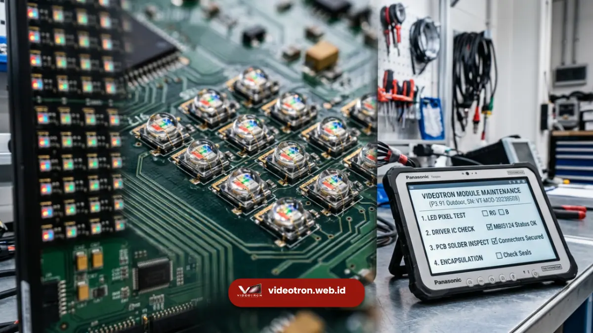

Jadwal rutin maintenance videotron adalah rencana perawatan berkala yang mencakup pembersihan modul, pengecekan kabel, dan kalibrasi warna.
Jadwal ini wajib dijalankan agar layar tetap terang, tajam, dan bebas titik mati. Tanpa jadwal yang konsisten, performa videotron menurun jauh lebih cepat dari yang seharusnya.
- Jadwal rutin maintenance videotron idealnya mencakup pengecekan harian ringan, bulanan menengah, dan tahunan menyeluruh.
- Debu, kelembapan, dan panas adalah tiga musuh utama modul LED yang wajib dikendalikan lewat jadwal berkala.
- Perawatan preventif terjadwal terbukti lebih hemat biaya dibanding perbaikan darurat saat videotron sudah rusak parah.
- Videotron outdoor membutuhkan frekuensi maintenance lebih ketat dibanding videotron indoor karena paparan cuaca.
- Layanan maintenance profesional dari videotron.web.id membantu menyusun dan menjalankan jadwal ini secara terstruktur.
- 1. Apa Itu Jadwal Rutin Maintenance Videotron?
- 2. Mengapa Jadwal Ini Penting bagi Pemilik Videotron?
- 3. Berapa Frekuensi Ideal Jadwal Maintenance Videotron?
- 4. Apakah Videotron Indoor dan Outdoor Punya Jadwal yang Sama?
- 5. Apa Saja yang Termasuk dalam Jadwal Maintenance Videotron?
- 6. Bagaimana Prosedur Kalibrasi Warna dalam Jadwal Maintenance?
- 7. Apa Risiko Jika Jadwal Maintenance Videotron Diabaikan?
- 8. Berapa Biaya yang Bisa Timbul dari Kerusakan Akibat Maintenance Terlambat?
- 9. Bagaimana Cara Menyusun Jadwal Maintenance Videotron yang Tepat?
- 10. Siapa yang Sebaiknya Menjalankan Jadwal Maintenance Videotron?
- 11. Manfaat Menggunakan Layanan Maintenance Videotron Profesional
- 12. Apa yang Membedakan Layanan Maintenance dari Videotron.web.id?
- 13. Kesalahan Umum dalam Menjalankan Jadwal Maintenance Videotron
Apa Itu Jadwal Rutin Maintenance Videotron?
Jadwal rutin maintenance videotron adalah dokumen kerja yang memuat daftar aktivitas perawatan beserta frekuensinya, mulai dari pembersihan permukaan modul hingga pengecekan sistem kontrol.
Dokumen ini menjadi acuan teknisi agar tidak ada komponen yang terlewat diperiksa. Pemilik videotron, baik untuk kebutuhan iklan luar ruang, backdrop panggung, maupun videotron instansi, membutuhkan jadwal ini agar investasi layar tetap terjaga nilainya.
Tanpa jadwal tertulis, perawatan videotron sering dilakukan secara reaktif, yaitu baru ditangani setelah muncul kerusakan yang terlihat jelas seperti layar bergaris atau warna pudar. Pendekatan reaktif ini umumnya membutuhkan biaya perbaikan yang lebih besar dibanding pendekatan preventif yang terjadwal rapi.
Mengapa Jadwal Ini Penting bagi Pemilik Videotron?
Jadwal rutin maintenance videotron penting karena videotron merupakan aset elektronik bernilai tinggi yang bekerja hampir tanpa henti, terutama untuk kebutuhan komersial.
Modul LED yang bekerja terus-menerus mengalami akumulasi debu dan panas yang, jika dibiarkan, dapat mempercepat penurunan kecerahan (luminance decay) dan memicu kegagalan komponen secara prematur.
Secara umum, praktik industri digital signage menunjukkan bahwa videotron yang dirawat sesuai jadwal cenderung memiliki masa pakai efektif yang lebih panjang dibanding videotron yang dibiarkan tanpa perawatan terstruktur.
Hal ini menjadikan jadwal maintenance bukan sekadar opsi tambahan, melainkan bagian dari strategi menjaga return on investment videotron itu sendiri.
Berapa Frekuensi Ideal Jadwal Maintenance Videotron?
Frekuensi ideal jadwal maintenance videotron umumnya dibagi menjadi tiga lapis: pengecekan harian ringan oleh operator, pengecekan bulanan oleh teknisi, dan pengecekan menyeluruh tahunan.
Videotron outdoor membutuhkan frekuensi yang lebih rapat karena terpapar debu, hujan, dan sinar matahari langsung.
Pengecekan harian biasanya berupa pemantauan visual sederhana untuk mendeteksi modul mati atau perubahan warna yang tidak wajar.
Pengecekan bulanan melibatkan pembersihan permukaan panel, pengecekan kabel data dan power, serta pengukuran suhu kabinet.
Sementara pengecekan tahunan mencakup kalibrasi warna menyeluruh, pengecekan struktur rangka, dan penggantian komponen yang mendekati batas usia pakai.

Apakah Videotron Indoor dan Outdoor Punya Jadwal yang Sama?
Videotron indoor dan outdoor tidak memiliki jadwal maintenance yang identik karena kondisi lingkungan keduanya sangat berbeda.
Videotron outdoor menghadapi kelembapan, debu jalanan, dan fluktuasi suhu ekstrem sehingga jadwal pembersihan dan pengecekan waterproofing perlu lebih sering dilakukan. Videotron indoor relatif lebih terlindungi, namun tetap membutuhkan perawatan rutin terhadap debu ruangan dan sistem pendingin ruang pemasangan.
Apa Saja yang Termasuk dalam Jadwal Maintenance Videotron?
Jadwal maintenance videotron yang komprehensif mencakup lima area utama: kebersihan fisik modul, kondisi kelistrikan, sistem kontrol, struktur rangka, dan kalibrasi tampilan.
Setiap area memiliki metode pengecekan tersendiri yang saling melengkapi untuk memastikan videotron beroperasi optimal.
Kebersihan fisik modul mencakup pembersihan debu pada permukaan LED dan ventilasi kabinet menggunakan alat khusus agar tidak merusak lapisan pelindung.
Kondisi kelistrikan meliputi pengecekan kabel power supply, konektor, dan grounding untuk mencegah korsleting.
Sistem kontrol mencakup pembaruan firmware dan pengecekan sinyal dari sending card maupun receiving card. Struktur rangka diperiksa dari sisi kekencangan baut dan potensi karat, sementara kalibrasi tampilan memastikan konsistensi warna dan kecerahan antar modul.
Bagaimana Prosedur Kalibrasi Warna dalam Jadwal Maintenance?
Kalibrasi warna dalam jadwal maintenance dilakukan dengan mengukur konsistensi brightness dan color temperature di seluruh permukaan layar menggunakan alat ukur khusus.
Proses ini penting karena modul LED yang sudah lama terpasang cenderung mengalami penurunan kecerahan yang tidak merata, sehingga tanpa kalibrasi berkala, tampilan videotron bisa terlihat belang antar panel.
Apa Risiko Jika Jadwal Maintenance Videotron Diabaikan?
Mengabaikan jadwal maintenance videotron berisiko menimbulkan kerusakan modul yang meluas, konsumsi daya listrik yang membengkak, dan penurunan kualitas gambar secara signifikan.
Risiko ini pada akhirnya berdampak pada citra brand atau instansi yang menggunakan videotron tersebut untuk komunikasi publik.
Videotron yang jarang dibersihkan cenderung mengalami penumpukan debu pada sirip pendingin, yang membuat suhu kabinet meningkat dan mempercepat kerusakan komponen elektronik di dalamnya.
Selain itu, kabel dan konektor yang tidak diperiksa secara berkala rentan mengalami korosi, terutama pada instalasi outdoor, yang berpotensi menyebabkan modul mati total secara mendadak saat acara penting sedang berlangsung.
Berapa Biaya yang Bisa Timbul dari Kerusakan Akibat Maintenance Terlambat?
Biaya perbaikan akibat maintenance yang terlambat umumnya jauh lebih tinggi dibanding biaya perawatan preventif terjadwal, karena kerusakan yang dibiarkan sering merembet ke komponen lain di sekitarnya.
Penggantian modul LED dalam jumlah banyak, misalnya, membutuhkan biaya dan waktu pemasangan yang jauh lebih besar dibanding sekadar pembersihan dan pengencangan berkala.
Bagaimana Cara Menyusun Jadwal Maintenance Videotron yang Tepat?
Menyusun jadwal maintenance videotron yang tepat dimulai dengan memetakan kondisi lingkungan pemasangan, intensitas penggunaan, dan spesifikasi teknis videotron itu sendiri. Ketiga faktor ini menentukan seberapa sering setiap komponen perlu diperiksa dan siapa yang bertanggung jawab menjalankannya.
Langkah berikutnya adalah menetapkan penanggung jawab untuk setiap lapis pengecekan, mulai dari operator harian hingga teknisi bersertifikasi untuk pengecekan tahunan. Dokumentasi hasil pengecekan juga perlu disiapkan agar riwayat perawatan videotron dapat dilacak, sehingga memudahkan identifikasi pola kerusakan yang mungkin berulang.
Siapa yang Sebaiknya Menjalankan Jadwal Maintenance Videotron?
Jadwal maintenance videotron sebaiknya dijalankan oleh tim teknisi berpengalaman yang memahami spesifikasi modul LED, sistem kelistrikan, dan software kontrol videotron secara menyeluruh.
Menyerahkan perawatan pada teknisi yang tidak berpengalaman berisiko menimbulkan kesalahan penanganan yang justru memperparah kondisi videotron.
Manfaat Menggunakan Layanan Maintenance Videotron Profesional
Layanan maintenance videotron profesional memberikan kepastian jadwal, dokumentasi lengkap, dan penanganan cepat saat ditemukan indikasi kerusakan.
Dengan tim yang sudah terbiasa menangani berbagai tipe videotron, proses pengecekan menjadi lebih efisien dan minim risiko kesalahan teknis.
Videotron.web.id menghadirkan layanan maintenance terjadwal yang disesuaikan dengan kondisi lapangan, baik untuk videotron indoor di lobi gedung maupun videotron outdoor di ruang publik.
Tim kami membantu menyusun jadwal pengecekan berkala lengkap dengan laporan kondisi videotron setiap kunjungan, sehingga pemilik videotron dapat memantau performa asetnya secara transparan.
Apa yang Membedakan Layanan Maintenance dari Videotron.web.id?
Layanan maintenance dari videotron.web.id dirancang dengan pendekatan preventif yang disesuaikan dengan karakteristik lingkungan pemasangan videotron.
Setiap kunjungan disertai laporan kondisi modul, rekomendasi tindakan lanjutan, serta estimasi waktu penggantian komponen yang mendekati batas usia pakai, sehingga pemilik videotron dapat merencanakan anggaran perawatan dengan lebih matang.
Kesalahan Umum dalam Menjalankan Jadwal Maintenance Videotron
Kesalahan umum dalam menjalankan jadwal maintenance videotron antara lain menunda pengecekan karena dianggap belum mendesak, menggunakan bahan pembersih yang tidak sesuai spesifikasi, dan tidak mendokumentasikan hasil pengecekan secara konsisten.
Kesalahan-kesalahan ini sering menjadi penyebab utama kerusakan videotron yang sebenarnya bisa dicegah.
Penggunaan cairan pembersih sembarangan, misalnya, dapat merusak lapisan pelindung modul LED dan justru mempercepat kerusakan permukaan layar.
Selain itu, jadwal yang tidak didokumentasikan membuat pemilik videotron kehilangan jejak riwayat perawatan, sehingga sulit mengevaluasi apakah frekuensi maintenance yang dijalankan sudah memadai atau belum.
Jadwal rutin maintenance videotron adalah investasi jangka panjang yang menjaga performa layar, memperpanjang usia pakai komponen, dan mencegah biaya perbaikan darurat yang jauh lebih besar.
Frekuensi perawatan perlu disesuaikan dengan jenis videotron, indoor atau outdoor, serta intensitas penggunaannya sehari-hari.
Jangan menunggu videotron Anda menunjukkan tanda kerusakan sebelum menyusun jadwal perawatan yang tepat. Hubungi tim videotron.web.id sekarang untuk konsultasi gratis dan dapatkan paket jadwal maintenance rutin yang disesuaikan dengan kebutuhan videotron Anda.

Hawa Nadira
LED Technology Consultant dan Visual Educator
Konsultan dan spesialis solusi display digital berdedikasi tinggi yang fokus membagikan panduan edukatif mengenai penerapan teknologi layar LED videotron untuk kebutuhan interior modern di Indonesia.